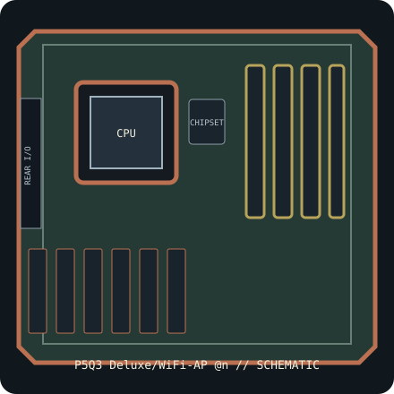

[ INDIVIDUAL COMPONENT // SYSTEM BOARD ]
ASUS P5Q3 Deluxe/WiFi-AP @n (PCB Rev. 1.02G)
Intel P45 / LGA775 ATX platform, 2008. PCB revision 1.02G; DDR3-only board, wireless package, CPU list and BIOS are exact-model dependent. This record identifies one exact SKU/revision; verify the silkscreened board marking before firmware or component selection.

IDENTIFICATION: This entry is for P5Q3 Deluxe/WiFi-AP @n, PCB revision 1.02G. Similar family names, chipset stepping and board revisions may use incompatible BIOS, layouts or connectors.
Specifications & compatibility
| Exact board / PCB revision | P5Q3 Deluxe/WiFi-AP @n — PCB revision 1.02G |
|---|---|
| Platform / socket / chipset | 2008 Intel desktop platform; LGA775; Intel P45 Express + ICH10R |
| CPU compatibility | LGA775 Core 2 Quad/Duo, Pentium and Celeron models explicitly listed by ASUS for P5Q3 Deluxe; verify FSB, stepping and minimum BIOS. Board socket alone does not establish CPU support. |
| Form factor / dimensions | ATX, 305 × 244 mm |
| Memory | Four DDR3 DIMM slots, up to 16 GB dual-channel non-ECC unbuffered DDR3; higher speeds are overclocked settings. DDR2 does not fit. |
| Expansion | Two PCIe 2.0 x16 slots with shared lanes, two PCIe x1 and two PCI slots. |
| Storage | Six internal Intel ICH10R SATA 3 Gb/s ports plus two external eSATA 3 Gb/s connections from the auxiliary controller; consult the manual for RAID and connector-sharing limits. |
| External I/O | Rear USB 2.0, PS/2, IEEE 1394, Gigabit Ethernet, analog audio and S/PDIF; WiFi-AP @n revision/package includes an 802.11n wireless module/antenna. |
| BIOS / firmware support | ASUS CrashFree BIOS 3 and EZ Flash 2. Check exact P5Q3 Deluxe CPU support list and minimum BIOS for each CPU. Use the firmware and manual for this DDR3 model, not P5Q Deluxe/P5Q-E. |
| PSU / case compatibility | ATX chassis with 305 × 244 mm support, correct standoffs and I/O opening. PSU must supply standard 24-pin ATX main power and 8-pin CPU 12 V power connectors. |
Installation and service notes
Confirm the exact CPU, minimum BIOS, DIMM type/capacity and supported slot/port mapping in the board-specific vendor support documents before purchase or installation. Socket fit is not proof of processor support; similarly named board firmware must not be cross-flashed.
Use ESD-safe handling, inspect the board for socket damage, leakage and corrosion, and keep loose screws or conductive debris away from the PCB. Check the case standoffs, PSU leads and cooler clearance against the manual before first power-on.
Manufacturer and manual sources
- ASUS P5Q3 Deluxe/WiFi-AP @n specificationsOfficial manufacturer specification entry for this model.
- ASUS P5Q3 Deluxe manual and BIOS supportOfficial manufacturer manual or revision-specific downloads for installation, CPU compatibility and BIOS support.
Specifications are archived for identification, not a guarantee that an aged board or used component is functional. Use the exact-revision vendor materials for final compatibility decisions.